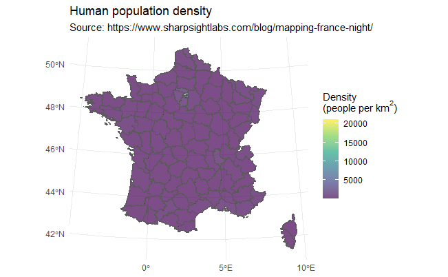
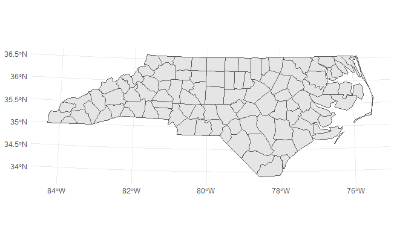
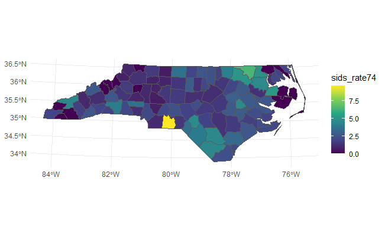
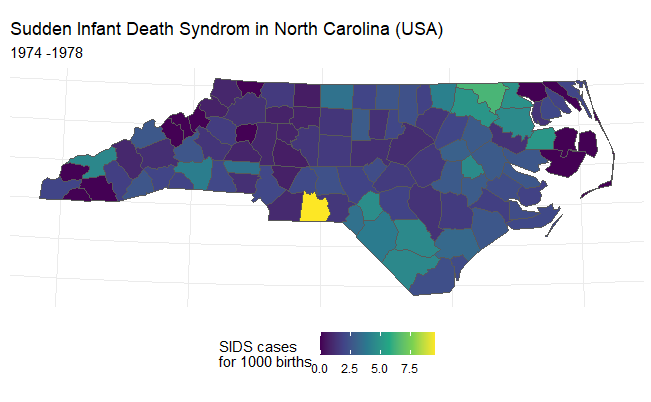

2 Examples of GIS with R
Following examples are to be readed after the lesson slides.
First example (suite of the slides example)
# url.france_pop <- url("https://vrzkj25a871bpq7t1ugcgmn9-wpengine.netdna-ssl.com/wp-content/datasets/france_population_data_2016.RData")
# save(df.france, file = "df.france.RData")
#load(url.france_pop)
load("data/gis/df.france.RData")
glimpse(df.france)## Rows: 35,798
## Columns: 18
## $ ID_GEOFLA <fct> COMMUNE00000000000000001, COMMUNE00000000000000002, COMM...
## $ CODE_COM <fct> 216, 033, 009, 225, 890, 018, 113, 319, 097, 070, 046, 5...
## $ INSEE_COM <fct> 32216, 47033, 32009, 38225, 62890, 08018, 32113, 10319, ...
## $ NOM_COM <fct> LOURTIES-MONBRUN, BOUDY-DE-BEAUREGARD, ARMOUS-ET-CAU, AU...
## $ STATUT <fct> Commune simple, Commune simple, Commune simple, Commune ...
## $ X_CHF_LIEU <int> 500820, 516424, 472979, 898640, 640049, 824246, 461332, ...
## $ Y_CHF_LIEU <int> 6264958, 6384852, 6278963, 6450689, 7028672, 6908952, 63...
## $ X_CENTROID <int> 500515, 515575, 473004, 898625, 640115, 824391, 460721, ...
## $ Y_CENTROID <int> 6265413, 6385938, 6278937, 6451597, 7029900, 6908954, 63...
## $ Z_MOYEN <int> 252, 112, 221, 1234, 79, 125, 134, 167, 752, 438, 1276, ...
## $ SUPERFICIE <dbl> 966, 1019, 932, 3371, 1023, 438, 919, 1904, 2217, 2667, ...
## $ POPULATION <dbl> 139, 414, 95, 2973, 178, 80, 97, 362, 296, 901, 10, 166,...
## $ CODE_ARR <fct> 3, 3, 3, 1, 4, 4, 2, 3, 2, 2, 2, 3, 2, 1, 1, 3, 2, 1, 3,...
## $ CODE_DEPT <fct> 32, 47, 32, 38, 62, 08, 32, 10, 06, 42, 31, 71, 53, 16, ...
## $ NOM_DEPT <fct> GERS, LOT-ET-GARONNE, GERS, ISERE, PAS-DE-CALAIS, ARDENN...
## $ CODE_REG <fct> 76, 75, 76, 84, 32, 44, 76, 44, 93, 84, 76, 27, 52, 75, ...
## $ NOM_REG <fct> LANGUEDOC-ROUSSILLON-MIDI-PYRENEES, AQUITAINE-LIMOUSIN-P...
## $ geometry <MULTIPOLYGON [m]> MULTIPOLYGON (((499484.6 62..., MULTIPOLYGO...# Transform into lower case
colnames(df.france) <- colnames(df.france) %>%
str_to_lower()
colnames(df.france)## [1] "id_geofla" "code_com" "insee_com" "nom_com" "statut"
## [6] "x_chf_lieu" "y_chf_lieu" "x_centroid" "y_centroid" "z_moyen"
## [11] "superficie" "population" "code_arr" "code_dept" "nom_dept"
## [16] "code_reg" "nom_reg" "geometry"# Summary
df.france$population %>%
summary()## Min. 1st Qu. Median Mean 3rd Qu. Max.
## 0 197 442 1779 1100 458298# Calculate density
df.france <- df.france %>%
mutate(density = population/superficie*100)
#as.tibble(df.france)
#head(df.france)# Sum population over dept
df.dept <- df.france %>%
# st_transform(crs = st_crs(forest)) %>%
# st_crop(st_bbox(covariates)) %>%
# st_intersection(covariates) %>%
group_by(code_dept) %>%
summarise(pop_dept = sum(population) ,
surface_dept= sum(superficie)) %>%
as_tibble()## `summarise()` ungrouping output (override with `.groups` argument)#head(df.dept)
# Calculate area of each site
departements_L93 <- departements_L93 %>%
mutate(area = st_area(.),
areakm2 = units::set_units(area, km^2),
bigsites = ifelse(as.numeric(areakm2) > 200, areakm2, NA))Comparing surfaces in the 2 DF
head(df.dept[,c(1,3)])## # A tibble: 6 x 2
## code_dept surface_dept
## <fct> <dbl>
## 1 01 563065
## 2 02 734630
## 3 03 732174
## 4 04 692413
## 5 05 562775
## 6 06 429505head(arrange(departements_L93, departements_L93$CODE_DEPT)[,c(2,14)])## Simple feature collection with 6 features and 2 fields
## geometry type: MULTIPOLYGON
## dimension: XY
## bbox: xmin: 644724.2 ymin: 6272482 xmax: 1077560 ymax: 6997000
## projected CRS: RGF93_Lambert_93
## CODE_DEPT bigsites geometry
## 1 01 5774.007 MULTIPOLYGON (((838243.6 65...
## 2 02 7427.176 MULTIPOLYGON (((708719 6956...
## 3 03 7363.692 MULTIPOLYGON (((664479.2 66...
## 4 04 6994.099 MULTIPOLYGON (((910437.3 63...
## 5 05 5685.919 MULTIPOLYGON (((933490 6411...
## 6 06 4292.680 MULTIPOLYGON (((1028846 627...# Join, then calculate density
#head(departements_L93)
departements <- departements_L93 %>%
select('Nom_DEPT' = NOM_DEPT,
'code_dept' = CODE_DEPT, area, areakm2)
departements_2 <- departements %>%
inner_join(df.dept,by='code_dept')
#head(departements_2)
departements_2 <- departements_2 %>%
mutate(dens_dept = pop_dept / (surface_dept/1000000),
dens_dept2 = pop_dept / areakm2)
#head(departements_2)departements_2 %>%
ggplot() +
aes(fill = as.numeric(dens_dept)) +
geom_sf(lwd = 0.1) +
scale_fill_viridis_c(
name = bquote('Density\n(people per km'^2*')'),
alpha = 0.7) +
labs(title = 'Human population density',
subtitle = 'par la somme des surfaces communales')departements_2 %>%
ggplot() +
aes(fill = as.numeric(dens_dept2)) +
geom_sf(lwd = 0.1) +
scale_fill_viridis_c(
name = bquote('Density\n(people per km'^2*')'),
alpha = 0.7) +
labs(title = 'Human population density',
subtitle = 'par le calcul des surfaces')
summary(departements_2$dens_dept2)## Min. 1st Qu. Median Mean 3rd Qu. Max.
## 14.81 49.65 81.66 559.63 157.21 21044.16Second example1
library(spData) # for the SIDs dataframe## To access larger datasets in this package, install the spDataLarge
## package with: `install.packages('spDataLarge',
## repos='https://nowosad.github.io/drat/', type='source')`sids <- st_read(dsn = system.file("shapes/sids.shp", package = "spData"), crs = 4326 )## Reading layer `sids' from data source `C:\Users\joly.GAEL\Documents\R\win-library\3.6\spData\shapes\sids.shp' using driver `ESRI Shapefile'
## Simple feature collection with 100 features and 22 fields
## geometry type: MULTIPOLYGON
## dimension: XY
## bbox: xmin: -84.32385 ymin: 33.88199 xmax: -75.45698 ymax: 36.58965
## geographic CRS: WGS 84The geometry
head(sids)## Simple feature collection with 6 features and 22 fields
## geometry type: MULTIPOLYGON
## dimension: XY
## bbox: xmin: -81.74107 ymin: 36.07282 xmax: -75.77316 ymax: 36.58965
## geographic CRS: WGS 84
## CNTY_ID AREA PERIMETER CNTY_ NAME FIPS FIPSNO CRESS_ID BIR74 SID74
## 1 1825 0.114 1.442 1825 Ashe 37009 37009 5 1091 1
## 2 1827 0.061 1.231 1827 Alleghany 37005 37005 3 487 0
## 3 1828 0.143 1.630 1828 Surry 37171 37171 86 3188 5
## 4 1831 0.070 2.968 1831 Currituck 37053 37053 27 508 1
## 5 1832 0.153 2.206 1832 Northampton 37131 37131 66 1421 9
## 6 1833 0.097 1.670 1833 Hertford 37091 37091 46 1452 7
## NWBIR74 BIR79 SID79 NWBIR79 east north x y lon lat L_id
## 1 10 1364 0 19 164 176 -81.67 4052.29 -81.48594 36.43940 1
## 2 10 542 3 12 183 182 -50.06 4059.70 -81.14061 36.52443 1
## 3 208 3616 6 260 204 174 -16.14 4043.76 -80.75312 36.40033 1
## 4 123 830 2 145 461 182 406.01 4035.10 -76.04892 36.45655 1
## 5 1066 1606 3 1197 385 176 281.10 4029.75 -77.44057 36.38799 1
## 6 954 1838 5 1237 411 176 323.77 4028.10 -76.96474 36.38189 1
## M_id geometry
## 1 2 MULTIPOLYGON (((-81.47276 3...
## 2 2 MULTIPOLYGON (((-81.23989 3...
## 3 2 MULTIPOLYGON (((-80.45634 3...
## 4 4 MULTIPOLYGON (((-76.00897 3...
## 5 4 MULTIPOLYGON (((-77.21767 3...
## 6 4 MULTIPOLYGON (((-76.74506 3...Mapping the shapefile
Mapping the polygons…
Without Transformation of projection
ggplot(sids)+
geom_sf() ***
***
With transformed projection
Let’s change the projection for a more fitted one of North Carolina: code: 2264
sids <- sids %>% st_transform(2264)
ggplot(sids)+
geom_sf() 
Mapping information
The rate of sids for the 1000 birth in the 1974 and 1978 period, we will use the data from the BIR74 and SID74 columns.
sids['sids_rate74'] <- (sids['SID74'] * 1000)/ sids['BIR74']## Warning in `[<-.data.frame`(`*tmp*`, "sids_rate74", value = structure(list(: 2
## variables sont fournies pour remplacer 1 variableshead(sids[,c(1,5,24)])## Simple feature collection with 6 features and 3 fields
## geometry type: MULTIPOLYGON
## dimension: XY
## bbox: xmin: -81.74107 ymin: 36.07282 xmax: -75.77316 ymax: 36.58965
## geographic CRS: WGS 84
## CNTY_ID NAME sids_rate74 geometry
## 1 1825 Ashe 0.9165903 MULTIPOLYGON (((-81.47276 3...
## 2 1827 Alleghany 0.0000000 MULTIPOLYGON (((-81.23989 3...
## 3 1828 Surry 1.5683814 MULTIPOLYGON (((-80.45634 3...
## 4 1831 Currituck 1.9685039 MULTIPOLYGON (((-76.00897 3...
## 5 1832 Northampton 6.3335679 MULTIPOLYGON (((-77.21767 3...
## 6 1833 Hertford 4.8209366 MULTIPOLYGON (((-76.74506 3...Functions and parameters:
ggplot(sids): Plot the data (without specifying te type of plot for now)geom_sf(aes(fill = sids_rate74)): aesthetics to be applyed: filling of the geometry using the data fromsids_rate74columnscale_fill_viridis_c(): with theviridis2 color scale dedicated to filling for continuous data
map <- ggplot(sids)+
geom_sf(aes(fill = sids_rate74))
map2 <- map +
scale_fill_viridis_c()
map2 ***
A better map
map3 <- map + ggtitle(
"Sudden Infant Death Syndrom in North Carolina (USA)", # title
"1974 -1978" # subtitle
) +
scale_fill_viridis_c(name = "SIDS cases \nfor 1000 births") + # legend title
theme(legend.position = "bottom" # legend position
) +
theme(
axis.title.x = element_blank(),
axis.text.x = element_blank(),
axis.ticks.x = element_blank() # Remove labels on axis
) +
theme(
axis.title.y = element_blank(),
axis.text.y = element_blank(),
axis.ticks.y = element_blank())
map3
References
http://cartonumerique.blogspot.com/p/cartographie-thematique.html
https://roelandtn.frama.io/post/simple-mapping-with-sf/
https://tender-curie-5b83bc.netlify.app/2019/03/01/mapping-sncf-stations/
https://github.com/oliviergimenez/analysesGeoloup
https://statnmap.com/2018-07-14-introduction-to-mapping-with-sf-and-co/ https://geocompr.robinlovelace.net/
Bivand, Roger S., Edzer J. Pebesma, and Virgilio. Gómez-Rubio. 2008. Applied Spatial Data Analysis with R. New York; London: Springer.
Lovelace, R., J. Nowosad, and J. Muenchow. 2019. Geocomputation with R. Chapman & Hall/Crc the R Series. CRC Press. https://books.google.fr/books?id=0y6ODwAAQBAJ.